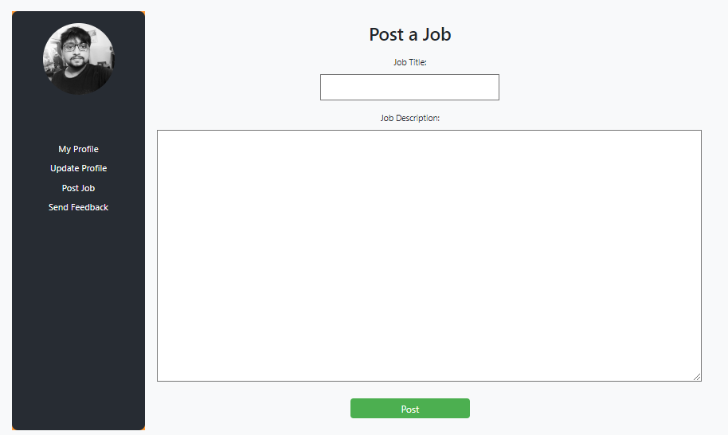
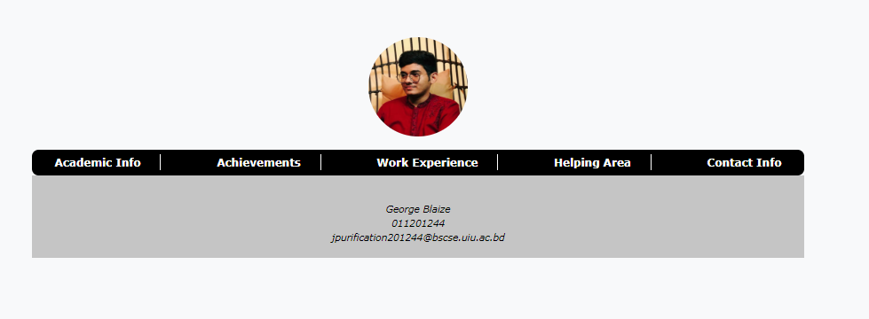
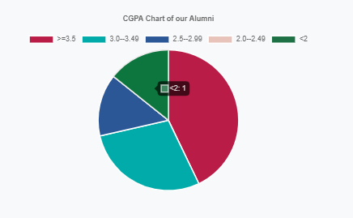
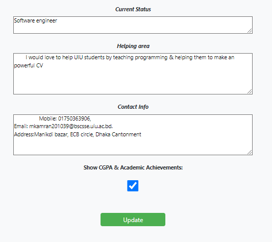
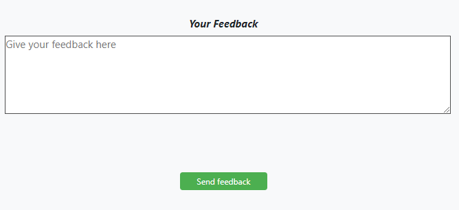

Career Assistant
Career Assistant is a web-based project designed to assist university alumni with their career development needs. The project includes several features such as finding alumni, job posting, checking job eligibility, visiting alumni profiles, seeing CGPA-based summaries in pie charts, updating profiles, and sending feedback to the admin.
The project is built using HTML, CSS, JavaScript for the frontend, and PHP, MySQL for the backend. It offers a user-friendly interface that allows alumni to easily navigate the website and access the available features.
Functional Requirements
- Find Alumni: Alumni can search for other alumni by university ID.
- Job Posting: Alumni can post job vacancies for their companies or organizations, including job titles, job descriptions, job requirements, and application procedures. 
- Visit Alumni Profile: Alumni can visit other alumni's profiles to learn more about their educational background, work experience, and career achievements. 
- CGPA-Based Summary in Pie Chart: Alumni can see a summary of their CGPA in a pie chart format that highlights their performance in different areas of their academic career. 
-
Update Profile: Alumni can update their profile information, including personal details, educational qualifications, work experience, and other relevant information. 
-
Send Feedback to Admin: Alumni can send feedback to the admin regarding the website's functionality, features, and overall user experience. 
Non Functional Requirements
-
Security: The website should be secure and protect alumni's personal and confidential information from unauthorized access or data breaches.
-
Performance: The website should perform well and respond quickly to user requests, ensuring a smooth and seamless user experience.
-
Usability: The website should be user-friendly and easy to navigate, with clear and concise instructions and labels.
-
Scalability: The website should be scalable and able to handle increasing traffic and data volume as the user base grows.
-
Compatibility: The website should be compatible with various web browsers and devices, ensuring that users can access it from anywhere, anytime.
-
Maintainability: The website should be easy to maintain, with regular updates and bug fixes to ensure optimal performance.
Architecture
The architecture of the Career Assistant project consists of a client-server model, where the client is the user interface (frontend) and the server is the backend database (MySQL) and the server-side scripting language (PHP). The user interface (UI) is built using HTML, CSS, and JavaScript, which sends requests to the server using AJAX calls. The server-side scripts (PHP) process the requests and retrieve data from the database (MySQL) to send back to the UI for display.
Conclusion
The Career Assistant project is a valuable resource for university alumni, providing them with a platform to connect with each other, access job opportunities, and advance their careers. The project's user-friendly interface, comprehensive features, and robust security measures make it a top choice for alumni seeking to enhance their professional development. It is designed to be secure, scalable, maintainable, and user-friendly, ensuring a smooth and seamless user experience.